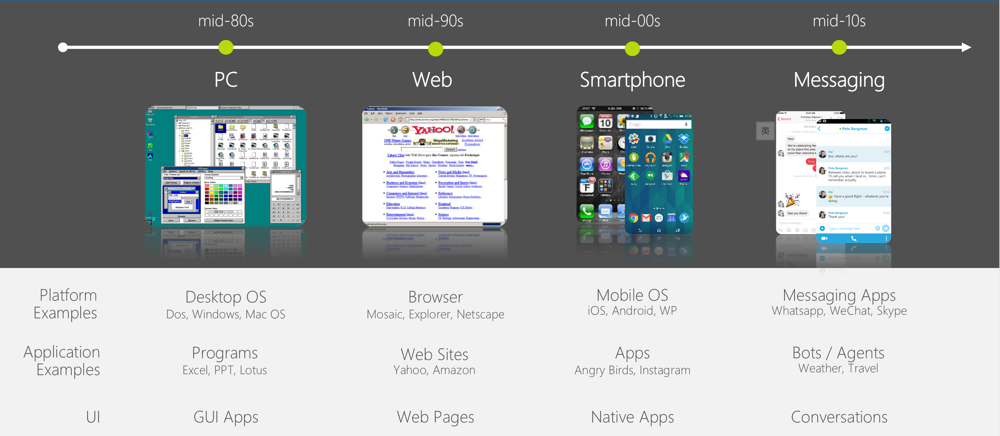

对话机器人¶
微軟提出的對話即平台（Conversation as a Platform） / Bot Framework / Skype SDK、Facebook 提出的 Messenger Platform、apple 也把 iMessage 變成開發平台、或是 Line 也正式推出 Messaging API 等等。 很多人剛接觸到 bot 的議題，會與 Microsoft 的 Cortana、apple 的 Siri 或是 Google 的 Google Now 聯想在一起
